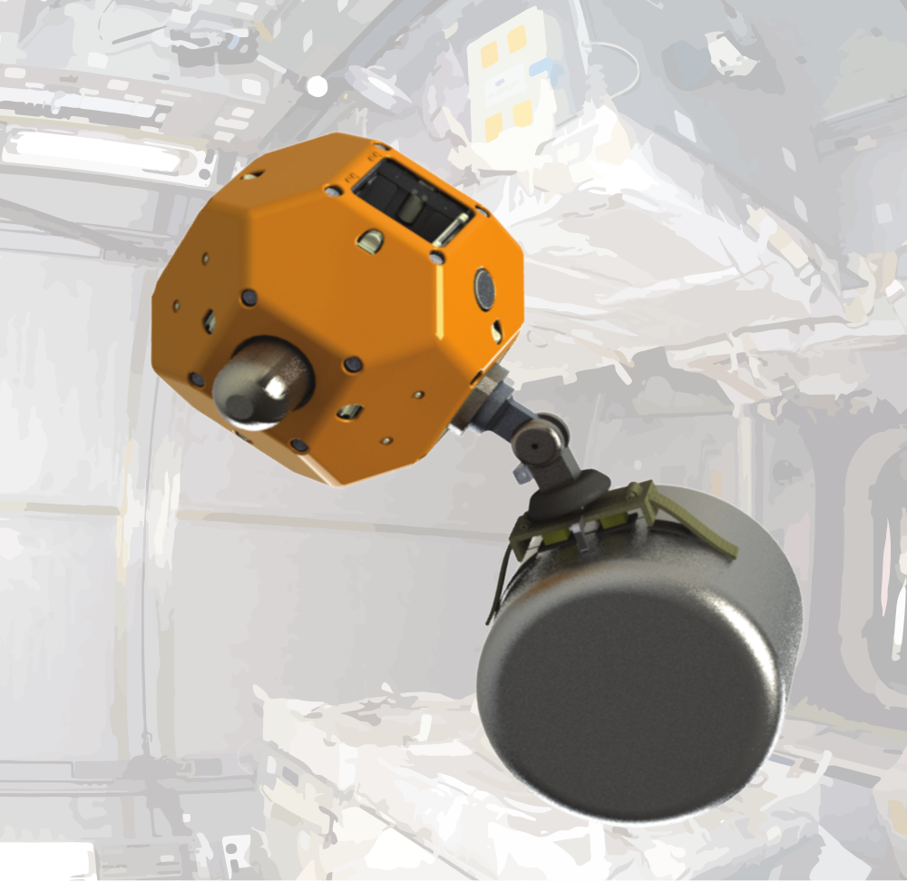
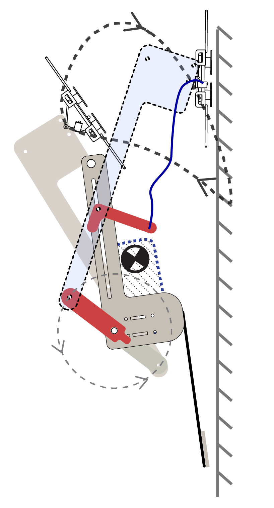

Research
Thesis: Enabling Multimodal Robots via Controllable Adhesives
Below are some applications I've explored with colleagues for utilizing controllable adhesives on robotic systems. Rather than relying on frictional contact, these robots were endowed with the ability to controllably attach onto surfaces and detach when desired.
Flying, Tugging, Micro Air Vehicles
 |
Work with the Laboratory of Intelligent Systems at EPFL during my exchange under a Swiss scholarship and NSF GROW. We combined aerial locomotion with the ability to tug with high forces by attaching onto the environment with adhesives. Science Robotics Paper |
NASA Free Flyer Gripper
|  | The Biomimetics and Dexterous Manipulatino Lab is working in collaboration with the Stanford Autonomous Systems Lab on a NASA Early Stage Innovations grant. We are aiming to equip Assistive Free Flyers (AFFs), small robots on the International Space Station, with gecko-gripper appendages to aid astronauts. My contribution has focused on adapting a curved surface, gecko adhesive gripper for use on a free flyer table. Applications may entail grasping the surfaces of uncoorperative objects, with some misalignment and relative velocity. To this end, we modeled force constraints of the gripper and dynamics while grasping translating, spinning objects. We experimentally verified the boundaries of successful grasp conditions on a 2D testbed. |
KlingOn, a Perching Climbing Robot
|  | A small multimodal robot capable of being thrown at vetical glass, sticking, and proceeding to climb up. Applications envision a quickly deployable robot that you can toss up to a hard-to-reach surface on a structure (ie bridge, dam, skyscraper etc) and have scutter around for a close inspection of a surface. |
Perching Micro Air Vehicles
 |
I was part of our group enabling MAVs to perch and take a rest on vertical surfaces. With a typical mission life lasting on the order of 20 minutes, it is a welcome break for the MAV to collect data or recharge. We designed gecko adhesive grippers that will stick to smooth, flat surfaces and collaborated with a controls group at UPenn to demonstrate perching under indoor motion capture. NYtimes “What You Get When You Blend a Drone and a Gecko” |
Sensing Footpad (MIT Undergraduate Research)
 |
I designed and manufactured the structure of a soft force sensor for my senior thesis in the Biomimetics and Dexterous Manipulation Lab at MIT. I worked under graduate student Michael Chuah, who implemented the signal processing and neural network to calibrate force readings. The force sensor was intended for use in the paw pad of the MIT Cheetah. I used a series of 3D printed molds to cast a woven fiberglass cloth into a polyurethane film that encased a softer silicone. Hall effect sensors were mounted above magnets on the deformable pad and this deflection between these was correlated force. |